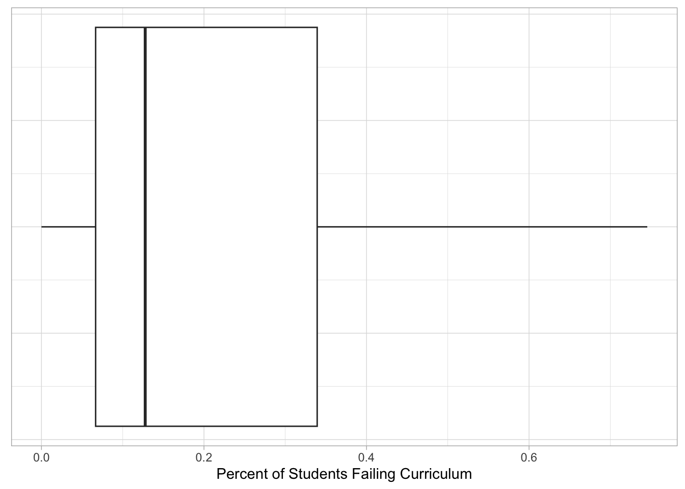

In this lab, we will be using the dplyr package to explore student evaluations of teaching data.
You are expected to use functions from dplyr to do your data manipulation!
Part 1: GitHub Workflow
Now that you have the Lab 5 repository cloned, you need to make sure you can successfully push to GitHub. To do this you need to:
Open the lab-5-student.qmd file (in the lower right hand corner).
Change the author line at the top of the document (in the YAML) to your name.
Save your file either by clicking on the blue floppy disk or with a shortcut (command / control + s).
Click the “Git” tab in upper right pane
Check the “Staged” box for the lab-5-student.qmd file (the file you changed)
Click “Commit”
In the box that opens, type a message in “Commit message”, such as “Added my name”.
Click “Commit”.
Click the green “Push” button to send your local changes to GitHub.
RStudio will display something like:
>>> /usr/bin/git push origin HEAD:refs/heads/main
To https://github.com/atheobold/introduction-to-quarto-allison-theobold.git
3a2171f..6d58539 HEAD -> main
Now you are ready to go! Remember, as you are going through the lab I would strongly recommend rendering your HTML and committing your after every question!
Part 2: Some Words of Advice
Part of learning to program is learning from a variety of resources. Thus, I expect you will use resources that you find on the internet. There is, however, an important balance between copying someone else’s code and using their code to learn.
Therefore, if you use external resources, I want to know about it.
If you used Google, you are expected to “inform” me of any resources you used by pasting the link to the resource in a code comment next to where you used that resource.
If you used ChatGPT, you are expected to “inform” me of the assistance you received by (1) indicating somewhere in the problem that you used ChatGPT (e.g., below the question prompt or as a code comment), and (2) downloading and including the .txt file containing your entire conversation with ChatGPT.
Additionally, you are permitted and encouraged to work with your peers as you complete lab assignments, but you are expected to do your own work. Copying from each other is cheating, and letting people copy from you is also cheating. Please don’t do either of those things.
Setting Up Your Code Chunks
The first chunk of this Quarto document should be used to declare your libraries (probably only tidyverse for now).
The second chunk of your Quarto document should be to load in your data.
Save Regularly, Render Often
Be sure to save your work regularly.
Be sure to render your file every so often, to check for errors and make sure it looks nice.
Make sure your Quarto document does not contain View(dataset) or install.packages("package"), both of these will prevent rendering.
Check your Quarto document for occasions when you looked at the data by typing the name of the data frame. Leaving these in means the whole dataset will print out and this looks unprofessional. Remove these!
If all else fails, you can set your execution options to error: true, which will allow the file to render even if errors are present.
Part 3: Let’s Start Working with the Data!
The Data
The teacher_evals dataset contains student evaluations of teaching (SET) collected from students at a University in Poland. There are SET surveys from students in all fields and all levels of study offered by the university.
The SET questionnaire that every student at this university completes is as follows:
Evaluation survey of the teaching staff of University of Poland. Please complete the following evaluation form, which aims to assess the lecturer’s performance. Only one answer should be indicated for each question. The answers are coded in the following way: 5 - I strongly agree; 4 - I agree; 3 - Neutral; 2 - I don’t agree; 1 - I strongly don’t agree.
Question 1: I learned a lot during the course.
Question 2: I think that the knowledge acquired during the course is very useful.
Question 3: The professor used activities to make the class more engaging.
Question 4: If it was possible, I would enroll for a course conducted by this lecturer again.
Question 5: The classes started on time.
Question 6: The lecturer always used time efficiently.
Question 7: The lecturer delivered the class content in an understandable and efficient way.
Question 8: The lecturer was available when we had doubts.
Question 9. The lecturer treated all students equally regardless of their race, background and ethnicity.
These data are from the end of the winter semester of the 2020-2021 academic year. In the period of data collection, all university classes were entirely online amid the COVID-19 pandemic. While expected learning outcomes were not changed, the online mode of study could have affected grading policies and could have implications for data.
Average SET scores were combined with many other variables, including:
characteristics of the teacher (degree, seniority, gender, SET scores in the past 6 semesters).
characteristics of the course (time of day, day of the week, course type, course breadth, class duration, class size).
percentage of students providing SET feedback.
course grades (mean, standard deviation, percentage failed for the current course and previous 6 semesters).
This rich dataset allows us to investigate many of the biases in student evaluations of teaching that have been reported in the literature and to formulate new hypotheses.
Before tackling the problems below, study the description of each variable included in the teacher_evals_codebook.pdf.
1. Load the appropriate R packages for your analysis.
# code chunk for loading packageslibrary(tidyverse)
── Attaching core tidyverse packages ──────────────────────── tidyverse 2.0.0 ──
✔ dplyr 1.1.4 ✔ readr 2.1.5
✔ forcats 1.0.0 ✔ stringr 1.5.1
✔ ggplot2 3.5.1 ✔ tibble 3.2.1
✔ lubridate 1.9.3 ✔ tidyr 1.3.1
✔ purrr 1.0.2
── Conflicts ────────────────────────────────────────── tidyverse_conflicts() ──
✖ dplyr::filter() masks stats::filter()
✖ dplyr::lag() masks stats::lag()
ℹ Use the conflicted package (<http://conflicted.r-lib.org/>) to force all conflicts to become errors
2. Load in the teacher_evals data.
# code chunk for importing the datateacher_evals <-read_csv("data-raw/teacher_evals.csv")
Rows: 8015 Columns: 22
── Column specification ────────────────────────────────────────────────────────
Delimiter: ","
chr (5): course_id, weekday, time_of_day, academic_degree, gender
dbl (17): teacher_id, question_no, no_participants, resp_share, SET_score_av...
ℹ Use `spec()` to retrieve the full column specification for this data.
ℹ Specify the column types or set `show_col_types = FALSE` to quiet this message.
3. Provide a brief overview (~4 sentences) of the dataset.
The dataset is from surveys of students who attend a university in Poland. It is made of average teacher evaluation scores from those students, as well as general characteristics of each class and teacher being evaluated. This broad availability of data allows us to perfom many kinds of analyses.
# you may want to use code to answer this questionnames(teacher_evals)
removing all courses with fewer than 10 respondents
changing data types in whichever way you see fit (e.g., is the instructor ID really a numeric data type?)
only keeping the columns we will use – course_id, teacher_id, question_no, no_participants, resp_share, SET_score_avg, percent_failed_cur, academic_degree, seniority, and sex
Assign your cleaned data to a new variable named teacher_evals_clean –- use these data going forward. Save the data as teacher_evals_clean.csv in the data-clean folder.
7. One teacher-course combination has some missing values, coded as NA. Which instructor has these missing values? Which course? What variable are the missing values in?
Instructor 56347 for course PAB3SE004PA has NA’s for the percent of students which failed the course this semester.
# code chunk for Q6teacher_evals_clean %>%filter_all(any_vars(is.na(.)))
8. What are the demographics of the instructors in this study? Investigate the variables academic_degree, seniority, and sex and summarize your findings in ~3 complete sentences.
On average, men have a 8-month longer seniority than women at this university. Additionally, while there are approximately the same number of male and female instructors at this university, there are more male instructors who are professors or have a doctorate than female instructors with the same position/qualifications. Finally, there are approximately the same number of male and female instructors with either a masters degree or no degree.
# A tibble: 8 × 3
# Groups: academic_degree, sex [8]
academic_degree sex n
<chr> <chr> <int>
1 dr female 73
2 dr male 96
3 ma female 38
4 ma male 39
5 no_dgr female 24
6 no_dgr male 19
7 prof female 1
8 prof male 7
9. Each course seems to have used a different subset of the nine evaluation questions. How many teacher-course combinations asked all nine questions?
49 teacher-course combinations asked all nine questions.
10. Which instructors had the highest and lowest average rating for Question 1 (I learnt a lot during the course.) across all their courses?
Of the 267 teachers that used the question, 129 teachers recieved a 5.0 average score for question 1. Only 3 of those 267 teachers recieved an average score less than 3.0.
11. Which instructors with one year of experience had the highest and lowest average percentage of students failing in the current semester across all their courses?
Instructors 104362 and 106692 had the highest percent of failing students, with 74.5% and 68%, respectively. Only 7 instructors with 1 year of seniority have no failing students.
# code chunk for Q10teacher_evals_clean %>%distinct(teacher_id, .keep_all =TRUE) %>%filter(seniority ==1) %>%select(teacher_id, percent_failed_cur) %>%arrange(desc(percent_failed_cur)) %>%ggplot(aes(x = percent_failed_cur)) +geom_boxplot() +theme_light() +labs(x ="Percent of Students Failing Curriculum",y ="") +theme(axis.title.y =element_blank(),axis.text.y =element_blank(),axis.ticks.y =element_blank())

12. Which female instructors with either a doctorate or professional degree had the highest and lowest average percent of students responding to the evaluation across all their courses?
Instructor 101508 had the highest proportion of students responding to the evaluation across all their courses, with over half of their students responding. 13 female instructors with either a doctorate or professional degree had less than 5% of students respond.
# code chunk for Q11teacher_evals_clean %>%distinct(teacher_id, .keep_all =TRUE) %>%filter(sex =="female") %>%filter(academic_degree =="dr"| academic_degree =="prof") %>%select(teacher_id, academic_degree, sex, resp_share) %>%arrange((resp_share)) %>%ggplot(aes(x = resp_share)) +geom_boxplot() +theme_light() +labs(x ="Percent of Students Responding to Evaluation",y ="") +theme(axis.title.y =element_blank(),axis.text.y =element_blank(),axis.ticks.y =element_blank())
Source Code
---title: "Lab 5: Student Evaluations of Teaching"author: "Michael Torrisi"date: todayformat: htmlexecute: echo: true error: true embed-resources: truecode-tools: truetoc: truetheme: defaultfontcolor: blacklinkcolor: bluemonobackgroundcolor: rgb(199, 221, 235)---In this lab, we will be using the `dplyr` package to explore student evaluationsof teaching data. **You are expected to use functions from `dplyr` to do your data manipulation!**# Part 1: GitHub WorkflowNow that you have the Lab 5 repository cloned, you need to make sure you can successfully push to GitHub. To do this you need to:- Open the `lab-5-student.qmd` file (in the lower right hand corner). - Change the `author` line at the top of the document (in the YAML) to yourname. - Save your file either by clicking on the blue floppy disk or with a shortcut(command / control + s). - Click the "Git" tab in upper right pane- Check the "Staged" box for the `lab-5-student.qmd` file (the file youchanged)- Click "Commit"- In the box that opens, type a message in "Commit message", such as"Added my name".- Click "Commit".- Click the green "Push" button to send your local changes to GitHub.RStudio will display something like:``` >>> /usr/bin/git push origin HEAD:refs/heads/mainTo https://github.com/atheobold/introduction-to-quarto-allison-theobold.git 3a2171f..6d58539 HEAD -> main```Now you are ready to go! Remember, as you are going through the lab I would strongly recommend rendering your HTML and committing your after **every** question! # Part 2: Some Words of AdvicePart of learning to program is learning from a variety of resources. Thus, Iexpect you will use resources that you find on the internet. There is, however,an important balance between copying someone else's code and *using their code to learn*. Therefore, if you use external resources, I want to know about it.- If you used Google, you are expected to "inform" me of any resources youused by **pasting the link to the resource in a code comment next to where you used that resource**.- If you used ChatGPT, you are expected to "inform" me of the assistance youreceived by (1) indicating somewhere in the problem that you used ChatGPT (e.g., below the question prompt or as a code comment), and (2) downloading andincluding the `.txt` file containing your **entire** conversation with ChatGPT.Additionally, you are permitted and encouraged to work with your peers as youcomplete lab assignments, but **you are expected to do your own work**. Copyingfrom each other is cheating, and letting people copy from you is also cheating.Please don't do either of those things.## Setting Up Your Code Chunks- The first chunk of this Quarto document should be used to *declare your libraries* (probably only `tidyverse` for now).- The second chunk of your Quarto document should be to *load in your data*.## Save Regularly, Render Often- Be sure to **save** your work regularly.- Be sure to **render** your file every so often, to check for errors and makesure it looks nice. - Make sure your Quarto document does not contain `View(dataset)` or `install.packages("package")`, both of these will prevent rendering. - Check your Quarto document for occasions when you looked at the data by typing the name of the data frame. Leaving these in means the whole dataset will print out and this looks unprofessional. **Remove these!** - If all else fails, you can set your execution options to `error: true`, which will allow the file to render even if errors are present.# Part 3: Let's Start Working with the Data!## The DataThe `teacher_evals` dataset contains student evaluations of teaching (SET)collected from students at a University in Poland. There are SET surveys from students in all fields and all levels of study offered by the university.The SET questionnaire that every student at this university completes is asfollows:> Evaluation survey of the teaching staff of University of Poland. Please> complete the following evaluation form, which aims to assess the lecturer’s> performance. Only one answer should be indicated for each question. The> answers are coded in the following way: 5 - I strongly agree; 4 - I agree;> 3 - Neutral; 2 - I don’t agree; 1 - I strongly don’t agree.>> Question 1: I learned a lot during the course.>> Question 2: I think that the knowledge acquired during the course is very> useful.>> Question 3: The professor used activities to make the class more engaging.>> Question 4: If it was possible, I would enroll for a course conducted by this> lecturer again.>> Question 5: The classes started on time.>> Question 6: The lecturer always used time efficiently.>> Question 7: The lecturer delivered the class content in an understandable and> efficient way.>> Question 8: The lecturer was available when we had doubts.>> Question 9. The lecturer treated all students equally regardless of their> race, background and ethnicity.These data are from the end of the winter semester of the 2020-2021 academicyear. In the period of data collection, all university classes were entirelyonline amid the COVID-19 pandemic. While expected learning outcomes were notchanged, the online mode of study could have affected grading policies and couldhave implications for data.**Average SET scores** were combined with many other variables, including:1. **characteristics of the teacher** (degree, seniority, gender, SET scores inthe past 6 semesters).2. **characteristics of the course** (time of day, day of the week, coursetype, course breadth, class duration, class size).3. **percentage of students providing SET feedback.**4. **course grades** (mean, standard deviation, percentage failed for thecurrent course and previous 6 semesters).This rich dataset allows us to **investigate many of the biases in student evaluations of teaching** that have been reported in the literature and to formulate newhypotheses.Before tackling the problems below, study the description of each variableincluded in the `teacher_evals_codebook.pdf`.**1. Load the appropriate R packages for your analysis.**```{r}#| label: setup# code chunk for loading packageslibrary(tidyverse)```**2. Load in the `teacher_evals` data.** ```{r}#| label: load-data# code chunk for importing the datateacher_evals <-read_csv("data-raw/teacher_evals.csv")head(teacher_evals)```### Data Inspection + Summary**3. Provide a brief overview (~4 sentences) of the dataset.**> The dataset is from surveys of students who attend a university in Poland. It is made of average teacher evaluation scores from those students, as well as general characteristics of each class and teacher being evaluated. This broad availability of data allows us to perfom many kinds of analyses.```{r}#| label: explore-data# you may want to use code to answer this questionnames(teacher_evals)```**4. What is the unit of observation (i.e. a single row in the dataset) identified by?**> One row in this data is unique to one semester's worth of evaluations, per teacher, per course.```{r}#| label: row-identification# you may want to use code to answer this questionunique(teacher_evals)```**5. Use _one_ `dplyr` pipeline to clean the data by:**- **renaming the `gender` variable `sex`**- **removing all courses with fewer than 10 respondents**- **changing data types in whichever way you see fit (e.g., is the instructor ID really a numeric data type?)**- **only keeping the columns we will use -- `course_id`, `teacher_id`, `question_no`, `no_participants`, `resp_share`, `SET_score_avg`, `percent_failed_cur`, `academic_degree`, `seniority`, and `sex`****Assign your cleaned data to a new variable named `teacher_evals_clean` –- use these data going forward. Save the data as `teacher_evals_clean.csv` in the `data-clean` folder.**```{r}#| label: data-cleaning# code chunk for Q4teacher_evals_clean <- teacher_evals %>%rename(sex = gender) %>%filter(no_participants >=10) %>%mutate(teacher_id =as.character(teacher_id)) %>%select(course_id, teacher_id, question_no, no_participants, resp_share, SET_score_avg, percent_failed_cur, academic_degree, seniority, sex)write_csv(teacher_evals_clean, "data-clean/teacher_evals_clean.csv")```**6. How many unique instructors and unique courses are present in the cleaned dataset?**> There are 939 distinct courses, and 297 distinct instructors.```{r}#| label: unique-courses# code chunk for Q5teacher_evals_clean %>%distinct(course_id) %>%nrow()``````{r}teacher_evals_clean %>%distinct(teacher_id) %>%nrow()```**7. One teacher-course combination has some missing values, coded as `NA`. Which instructor has these missing values? Which course? What variable are the missing values in?**>Instructor 56347 for course PAB3SE004PA has NA's for the percent of students which failed the course this semester.```{r}#| label: uncovering-missing-values# code chunk for Q6teacher_evals_clean %>%filter_all(any_vars(is.na(.)))```**8. What are the demographics of the instructors in this study? Investigate the variables `academic_degree`, `seniority`, and `sex` and summarize your findings in ~3 complete sentences.**> On average, men have a 8-month longer seniority than women at this university. Additionally, while there are approximately the same number of male and female instructors at this university, there are more male instructors who are professors or have a doctorate than female instructors with the same position/qualifications. Finally, there are approximately the same number of male and female instructors with either a masters degree or no degree.```{r}#| label: exploring-demographics-of-instructors# code chunk for Q7teacher_evals_clean %>%distinct(teacher_id, .keep_all =TRUE) %>%select(academic_degree, seniority, sex) %>%group_by(sex) %>%summarize(avg =mean(seniority))``````{r}teacher_evals_clean %>%distinct(teacher_id, .keep_all =TRUE) %>%select(academic_degree, seniority, sex) %>%group_by(academic_degree, sex) %>%count()```**9. Each course seems to have used a different subset of the nine evaluation questions. How many teacher-course combinations asked all nine questions?**> 49 teacher-course combinations asked all nine questions.```{r}#| label: teacher-course-asked-every-question# code chunk for Q8teacher_evals_clean %>%group_by(course_id, teacher_id) %>%count() %>%filter(n ==9) %>%nrow()```## Rate my Professor**10. Which instructors had the highest and lowest average rating for Question 1 (I learnt a lot during the course.) across all their courses?**> Of the 267 teachers that used the question, 129 teachers recieved a 5.0 average score for question 1. Only 3 of those 267 teachers recieved an average score less than 3.0.```{r}#| label: question-1-high-low# code chunk for Q9teacher_evals_clean %>%filter(question_no ==901) %>%distinct(teacher_id, .keep_all =TRUE) %>%select(teacher_id, SET_score_avg) %>%arrange(desc(SET_score_avg)) %>%ggplot(aes(x = SET_score_avg)) +geom_boxplot() +theme_light() +labs(x ="SET Score Average",y ="") +theme(axis.title.y =element_blank(),axis.text.y =element_blank(),axis.ticks.y =element_blank())```**11. Which instructors with one year of experience had the highest and lowest average percentage of students failing in the current semester across all their courses?**> Instructors 104362 and 106692 had the highest percent of failing students, with 74.5% and 68%, respectively. Only 7 instructors with 1 year of seniority have no failing students.```{r}#| label: one-year-experience-failing-students# code chunk for Q10teacher_evals_clean %>%distinct(teacher_id, .keep_all =TRUE) %>%filter(seniority ==1) %>%select(teacher_id, percent_failed_cur) %>%arrange(desc(percent_failed_cur)) %>%ggplot(aes(x = percent_failed_cur)) +geom_boxplot() +theme_light() +labs(x ="Percent of Students Failing Curriculum",y ="") +theme(axis.title.y =element_blank(),axis.text.y =element_blank(),axis.ticks.y =element_blank())```**12. Which female instructors with either a doctorate or professional degree had the highest and lowest average percent of students responding to the evaluation across all their courses?**> Instructor 101508 had the highest proportion of students responding to the evaluation across all their courses, with over half of their students responding. 13 female instructors with either a doctorate or professional degree had less than 5% of students respond.```{r}#| label: female-instructor-student-response# code chunk for Q11teacher_evals_clean %>%distinct(teacher_id, .keep_all =TRUE) %>%filter(sex =="female") %>%filter(academic_degree =="dr"| academic_degree =="prof") %>%select(teacher_id, academic_degree, sex, resp_share) %>%arrange((resp_share)) %>%ggplot(aes(x = resp_share)) +geom_boxplot() +theme_light() +labs(x ="Percent of Students Responding to Evaluation",y ="") +theme(axis.title.y =element_blank(),axis.text.y =element_blank(),axis.ticks.y =element_blank())```